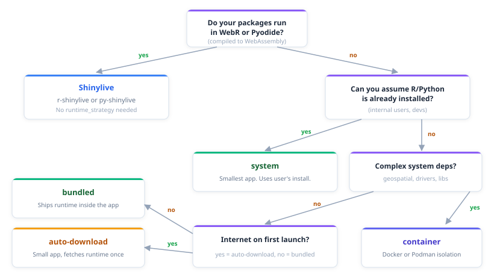
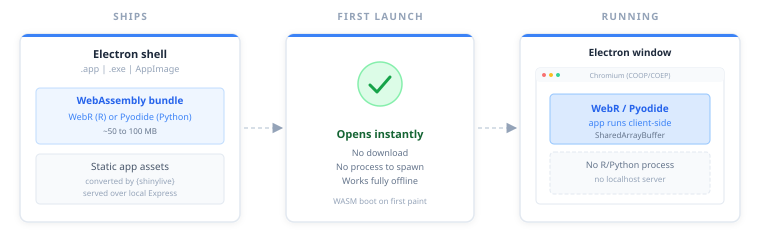
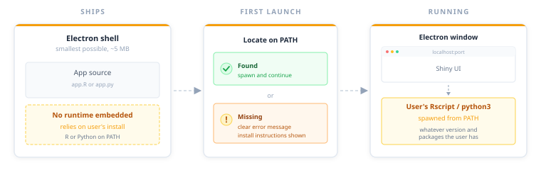
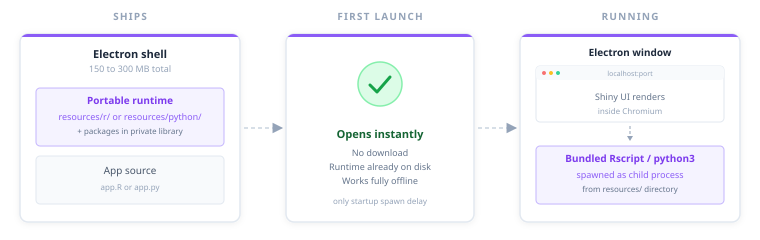

# Language autodetected from files in appdir; shinylive is the default strategy
export(
appdir = "my-app",
destdir = "output"
)
# Equivalent, fully explicit
export(
appdir = "my-app",
destdir = "output",
app_type = "r-shiny",
runtime_strategy = "shinylive"
)
# Python
export(
appdir = "my-py-app",
destdir = "output",
app_type = "py-shiny",
runtime_strategy = "shinylive"
)The runtime strategy decides how your Shiny app actually runs inside the Electron shell. Five options, five tradeoffs. The right one depends on your audience, your package dependencies, and whether you can assume internet access on first launch.
All five strategies work with both r-shiny and py-shiny. shinylive is the default when you do not set one explicitly.
Set the strategy either as the runtime_strategy argument to export() or as build.runtime_strategy in _shinyelectron.yml. Function arguments override the config file, so passing runtime_strategy = "bundled" wins even if the config says something else.
Picking a strategy
The matrix below lays out what each strategy ships in the exported bundle, what happens on first launch, and how the pieces fit together once the app is running. Start here if you want the shape of each option at a glance.
![Five-row matrix comparing the shinylive, bundled, auto-download, system, and container runtime strategies across three columns: what ships in the exported package, what happens on first launch, and the running architecture. Shinylive ships an Electron plus WASM bundle, opens offline, and runs the app in the browser. Bundled ships Electron plus a portable R or Python runtime, opens offline, and spawns the bundled runtime. Auto-download ships Electron plus a small downloader, fetches and caches the runtime on first launch, and then spawns the cached runtime. System ships Electron only, finds Rscript or python3 on PATH at first launch, and spawns the system runtime. Container ships Electron plus container config, pulls the image and starts a container on first launch, and then talks to the containerized app over localhost.](../reference/figures/strategy-comparison.svg)
If you want to be walked through the choice one question at a time (packages, audience, system dependencies, internet access), follow the decision tree below. Each branch ends at the strategy that fits.

Once you have narrowed it down, the table below compares the five strategies on the dimensions that usually drive the final call: how much you ship, what the first launch costs, and what the end user needs on their machine.
| Shinylive | System | Bundled | Auto-download | Container | |
|---|---|---|---|---|---|
| App size | 50 to 100 MB | ~5 MB | 150 to 300 MB | ~5 MB | ~5 MB |
| First launch | Fast | Fast | Fast | Slow (downloads runtime) | Medium (pulls image) |
| Offline support | Full | Full | Full | First launch needs internet | First launch needs internet |
| User requirements | None | R or Python installed | None | Internet on first run | Docker or Podman |
| Dependency isolation | WebR/Pyodide sandbox | None | Full | Full | Full |
| Package compatibility | Limited (WebR/Pyodide) | Complete | Complete | Complete | Complete |
| Linux support | Yes | Yes | No (use system or container) | No (use system or container) | Yes |
Shinylive strategy
Shinylive compiles your app to WebAssembly and runs it entirely in the browser. WebR handles R. Pyodide handles Python. Either way, no server-side process ever starts: the browser runs inside Electron and the whole thing ships without a real R or Python runtime.

shinylive is the default strategy, so a bare call with no explicit strategy picks it automatically.
The export flow
-
export()calls the shinylive R package (for R) or theshinyliveCLI (for Python) to convert your app to static assets. - The Electron app serves those assets over a local Express server with COOP and COEP headers. Those headers enable the
SharedArrayBufferthat WebR needs. - WebR or Pyodide boots inside the browser and runs your code.
Tradeoffs
You pay for zero runtime management in app size (around 50 to 100 MB on disk for R, a bit less for Python) and in a slower first paint while WebR or Pyodide boots. Package compatibility is the real catch: anything with C or Fortran needs a WebR-compatible build, and Python packages must exist in Pyodide. In exchange, the end user installs nothing, the same build runs identically on Windows, macOS, and Linux, and there is no native child process to crash or clean up.
Start here whenever your dependencies allow it. Only move to a native strategy when a package actually fails to load in the browser.
System strategy
The system strategy assumes R or Python is already installed. The Electron app spawns Rscript or python3 from the user’s PATH.

export(
appdir = "my-app",
destdir = "output",
runtime_strategy = "system"
)The launch flow
-
export()packages your app files into the Electron project. No runtime is embedded. - At launch, the Electron backend (
native-r.jsornative-py.js) spawnsRscriptorpython3as a child process. - That child starts the Shiny server. Electron connects to it.
Tradeoffs
System gives you the smallest possible build: the Electron shell, your app, and nothing else. There is no download, no container engine, no runtime embedding. Whatever R or Python the user has already installed is what runs.
The cost is that the end user must have a working R or Python on PATH, and different users may be running different versions of your package dependencies. Reach for system for internal tools shipped to developers or data scientists who already have the language installed, or for your own local development loop.
Bundled strategy
Bundled embeds a complete portable R or Python runtime inside the Electron app at build time. The user needs nothing beyond the app itself.
Think of it as shipping a laptop with the OS pre-installed: heavy download, then everything works offline. Auto-download (the next section) is the other extreme, shipping a setup script that fetches the OS on first boot.

export(
appdir = "my-app",
destdir = "output",
runtime_strategy = "bundled"
)The build flow
- During
export(), shinyelectron downloads a portable runtime and writes it into the Electron project’sresources/directory. - Your app dependencies are installed into that runtime’s library.
- At launch, the Electron backend uses the bundled
Rscriptorpython3instead of anything on the user’s system.
Tradeoffs
Bundled gets you full native package compatibility with zero dependencies on the end user’s machine, and the app works offline from the very first launch. The price is a much larger installer (150 to 300 MB depending on runtime and packages) and a longer build because the runtime has to be downloaded and populated with packages during export().
The one platform hole is Linux. Portable R is unavailable there today, so an R app targeting Linux has to fall back to system or container. Python apps can bundle on every platform.
Choose bundled for public-facing apps when you cannot assume internet on first launch and the end user probably does not have R or Python installed.
Auto-download strategy
Auto-download is the compromise between system and bundled. The installer stays small because no runtime ships with the app, and the end user needs nothing pre-installed because the runtime arrives on first launch. After that, every launch uses a cached copy on disk.
![Three-column diagram for the auto-download strategy. Ships column shows the Electron shell with app source and a downloader module (runtime-downloader.js), with no runtime embedded. First launch column shows three numbered steps: check cache directory, download portable runtime, extract and install packages, with the cache path noted as tilde slash dot shinyelectron slash cache. Running column shows the Electron window connecting over localhost to a cached Rscript or python3 spawned from the cache directory that is shared across all shinyelectron apps.](../reference/figures/strategy-auto-download.svg)
export(
appdir = "my-app",
destdir = "output",
runtime_strategy = "auto-download"
)The launch flow
-
export()packages the app without a runtime and includes theruntime-downloader.jsbackend. - On first launch, the downloader checks a local cache directory. If it finds no runtime, it downloads and extracts a portable build.
- The runtime is cached per-user:
~/.shinyelectron/cache/on macOS and Linux,%LOCALAPPDATA%\shinyelectron\cache\on Windows. - Subsequent launches skip the download and reuse the cached runtime.
The download sources are the same ones bundled uses: portable-r for R, python-build-standalone for Python.
Tradeoffs
Auto-download wins on download size (essentially the Electron shell plus your app) and on package compatibility, since the user ends up with a real R or Python behind the window. The cached runtime is shared across every shinyelectron app installed on the same machine, so the cost amortizes after the first install.
The price lands on first-launch UX. The user sees a progress screen while the runtime downloads, and offline first-runs do not work at all. Same Linux limitation as bundled: no portable R there today.
This is the middle ground when download size matters (a GitHub release, a landing-page link) and you can reasonably assume the user has internet the first time they open the app.
Container strategy
The container strategy runs your Shiny app inside a Docker or Podman container. The Electron shell talks to the containerized app over a local port.
![Three-column diagram for the container strategy. Ships column shows the Electron shell with the app source and container configuration (engine, image, tag from _shinyelectron.yml plus container.js), with the container image pulled later rather than shipped. First launch column shows three numbered steps: detect Docker or Podman, pull image if pull_on_start is true, and start container with a mapped port, plus a note that Docker or Podman is required. Running column shows the Electron window connecting over localhost on a mapped host port into a Docker or Podman container holding R or Python with system dependencies, which is stopped on window close.](../reference/figures/strategy-container.svg)
export(
appdir = "my-app",
destdir = "output",
runtime_strategy = "container"
)Configure the engine and image in _shinyelectron.yml:
build:
type: "r-shiny"
runtime_strategy: "container"
container:
engine: "docker" # or "podman"
image: "my-org/my-app"
tag: "latest"
pull_on_start: trueThe launch flow
-
export()packages the app and includes thecontainer.jsbackend. - At launch, Electron detects Docker or Podman.
- It pulls the image if
pull_on_startis true, then starts a container with the app directory mounted. - The Shiny server runs inside the container. Electron connects to the exposed port.
- When the Electron window closes, the container is stopped and removed.
Tradeoffs
Containers buy you OS-level isolation rather than just package-level, which is the right answer for apps with complex system dependencies (C libraries, database drivers, geospatial tools) that are awkward or impossible to bundle portably. Reproducibility is exact across machines.
In return, the end user must have Docker or Podman installed and running, first launch can be slow while the image pulls, and images tend to be large. Docker Desktop also requires a commercial license at larger organizations.
Reach for containers when the dependencies demand it, or when your team already ships software this way.
Platform considerations
Most strategy choices are platform-neutral, but a few constraints are worth calling out before you commit to a build target.
Portable runtime coverage
Portable R comes from the portable-r project. It covers Windows (x64 and aarch64) and macOS (arm64 and x86_64), and includes Rtools on Windows so the user does not install R separately. There is no portable-r Linux build today, which is why bundled and auto-download are unavailable for R apps on Linux. Use system or container for Linux R targets.
Portable Python comes from python-build-standalone by Astral and covers all three platforms. Python apps can use every strategy everywhere.
Cross-platform builds
A bundled build can only target the platform you built on, because the embedded runtime is a platform-specific binary. To ship installers for Windows, macOS, and Linux from one machine, use auto-download or container, or build each platform separately. The GitHub Actions vignette shows how to fan out bundled builds across matrix runners in CI.
macOS code signing
bundled and auto-download embed or download a runtime that may need re-signing for macOS notarization. Pass sign = TRUE to export() and set up your signing credentials; see the Code Signing vignette for specifics.
Next steps
- Container Strategy: Docker and Podman setup, custom Dockerfiles, platform gotchas.
- Code Signing and Distribution: macOS notarization, Windows SmartScreen, signing credentials.
- Security Considerations: Electron’s security model, secure defaults, common pitfalls.